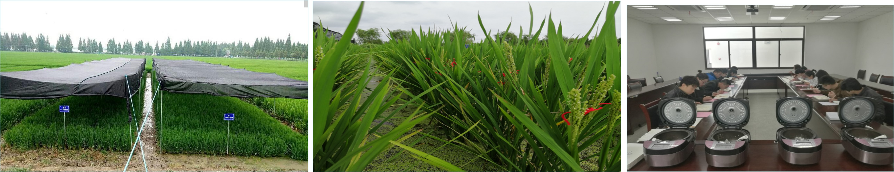
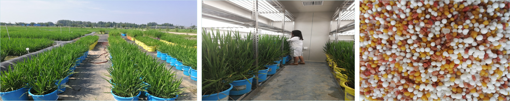

水稻优质丰产与抗逆栽培理论研究
-
重点研究:
（1）水稻优质丰产群体质量研究;
（2）水稻优质丰产协调提升的水氮调控效应及机理研究；
（3）水稻高温干旱胁迫生理响应机制及调控途径研究。
课题来源: 国家自然科学基金（32272205、32071946、31801286、31501245、 32201895 ）、安徽省自然科学基金（1908085MC67、1808085QC70，1208085MC34）、 安徽省教育厅自然科学基金（KJ2018A0158, KJ2016A862）
近5年主要论著： He et al., (2022)Environmental and experimental botany，He et al., (2021) Physiologia plantarum，You et al (2021) Frontiers in Plant Science，You et al (2017) BMC plant biology，He et al (2016) Annals of applied biology，Wu et al (2015) Biochemical and Biophysical Research Communications，Li et al (2014) Journal of agronomy and crop science，何海兵 等（2017）西北植物学报，何海兵等（2016）农业机械学报，何海兵 等（2016）中国农业科学。

1. Molecular mechanisms regulating mesophyll conductance under severe water stress for water-saving drought-resistant rice in wetting-drying alternate irrigation. Environmental and experimental botany, 204,105090
2. Photosynthetic physiological response of water‐saving and drought‐resistant rice to severe drought under wetting‐drying alternation irrigation.Physiologia plantarum, 2021, 173:2191–2206.
3. iTRAQ-based proteome profile analysis of superior and inferior spikelets at early grain filling stage in japonica rice. BMC Plant Biology, 2017, 17:100.
4. The growth characteristics and yield potential of rice (Oryza sativa) under non-flooded irrigation in arid region. Annals of Applied Biology. 2016, 168: 337–356.
5. Five pectinase gene expressions highly responding to heat stress in rice floral organs revealed by RNA-seq analysis. Biochemical and Biophysical Research Communications, 2015, 463: 407–413.
6. Genome-Wide Identification of MicroRNAs Responsive to High Temperature in Rice (Oryza sativa) by High-Throughput Deep Sequencing. J Agro Crop Sci, 2014, 201(5): 379–388.
